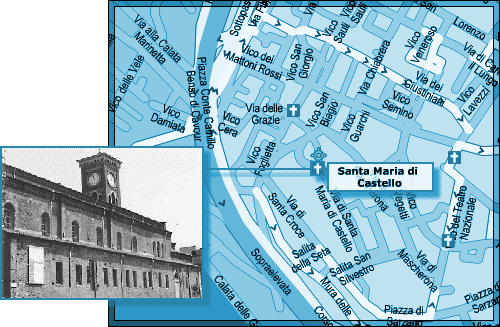

L'ICPA est une association privée créée par des amis et des collègues du journaliste Jack Lorski au lendemain de l'annonce de son meurtre en Écosse. Son seul but est d'aider les services de police et de justice internationaux à mettre fin le plus tôt possible aux agissements criminels du Phoenix.
SKL NETWORK est l'agence qui employait Jack Lorski. Elle a reçu et rendu public les deux CD-Roms envoyés par le Phoenix.
LIBERATION.FR a publié plusieurs articles sur l'affaire du Phoenix. Utilisez son moteur de recherches pour accéder à ses archives.
VICTIME N°2 : FRÈRE FRANCESCO
- IDENTITÉ
Le frère Francesco, prêtre dominicain et membre religieux de Manus Domini, était bibliothécaire du couvent Santa Maria di Castello de Gênes.
- PHOTO
- DATE ET LIEU DU CRIME
En décembre 2001, le corps du frère Francesco est retrouvé à Gênes, dans les caves de l'église Santa Maria di Castello. Il a été attaché au dossier d'un prie-Dieu puis un glaive a été inséré dans sa main gauche. L'inscription Sol Invictus était tracée à ses côtés avec son propre sang. - AUTOPSIE
Le frère Francesco a été égorgé. Une brûlure en forme de signe magique a été relevée sur son cadavre. - ANALYSE
Le frère Francesco est la deuxième victime connue du Phoenix. Le tueur l'a d'abord choisi parce qu'il était membre de Manus Domini, condition sine qua non de sa vengeance contre cette société secrète.
Afin de respecter son rituel lié au parcours européen de son maître à penser, Giordano Bruno, le Phoenix a également choisi le frère Francesco parce qu'il était gênois. En effet, après avoir quitté Naples en 1576, le philosophe italien séjourne quelques mois à Gênes ; cependant, sa condition d'apostat l'oblige finalement à s'expatrier.
Toujours en référence à son maître, le Phoenix a signé son crime en associant le frère Francesco à Mars, le troisième principe élémentaire de la magie brunienne (De imaginum idearum compositione, 1591) : Un homme, d'apparence râblée, se lève, le teint cuivré et coléreux, horrible à regarder, judicieux, sévère, le regard brillant, du feu dans les yeux et souriant tel un lion à la mâchoire béante. […] Il porte une énorme épée dans sa main gauche qui, semble-t-il, est faite de bronze solide sur lequel l'image très étirée d'un dragon a été gravée.
- COMMENTAIRE DU PHOENIX
• « Second sacrifié. Il est descendu en suppliant dans les caves de l'église avant de mourir l'épée à la main. » - DOCUMENT
• Article d'un journal italien relatant la découverte du corps du frère Francesco
« Macabre découverte hier dans les caves de l'église Santa Maria di Castello à Gênes. Un electricien qui avait eté appelé pour une panne dans le couvent à côté de l'église, après être descendu dans la cave, s'est retrouvé face à face avec le cadavre d'un homme qui tenait un glaive dans la main. La première épouvante passée, comme son agresseur ne bougeait pas, il a pensé que c'etait un mannequin, que quelqu'un avait armé pour lui faire une vilaine farce. En lui tournant autour, il s'est rendu compte que c'était un prêtre dominicain, tenu lié avec une cordelette au dossier d'un prie-dieu. Il a aussitôt appelé la police. L'enquête a révélé qu'il s'agissait du frère Francesco, bibliothécaire dans le couvent. Il a eté égorgé et le glaive a eté inseré dans sa main gauche. Une étrange brûlure, en forme de signe magique, a eté relevée sur le cadavre. Près du corps, il y avait une inscription latine probablement écrite avec le sang de l'infortuné : "Sol Invictus".
Personne sur place ne comprend la raison de cet horrible mise en scène. Le bibliothécaire était un homme discret, estimé de tout ceux qui le connaissaient. "Personne ne pouvait lui vouloir du mal !" s'est exclamé une paroissienne qui l'avait aidé pour décorer l'abbaye pour la période de Noël. "Ca, c'est le crime d'un fou !". Il semble que la police privilégie également cette hypothèse sans écarter celle d'un homicide rituel, perpétré par une secte satanique. Ce prêtre avait été contacté par la directrice d'un institut de jeunes filles en proie à des crises d'hystérie collective. Elle lui avait demandé de calmer ses pensionnaires en les aspergeant d'eau bénite. Le prêtre n'était pas exorciste et ne se sentait pas la force d'affronter les forces maléfiques, mais il avait promis d'en parler à son supérieur. »
- LIEN
• Site sur les églises de Gênes